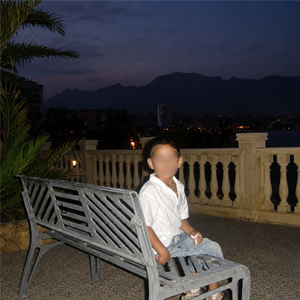

Desarrollé pasión por el rap y la música desde bien joven, inspirado por mi hermana, que me enseñaba música de Eminem, 50Cent y artistas nacionales.
Con 12 años me mudé a Argentina, donde siempre mantendría en secreto mi faceta rapera, aunque rapeaba con compañeros en el aula.
A los 16 gané la Doggos que se hizo en varios años. Dicha competición fue la más importante de la provincia de San Luis, y al empezar a ser respetado me volví un referente, moviendo mucho las ramas de la cultura en la provincia y trayendo la Supremacia MC a la provincia de San Luis.
Viajé a dedo por toda Argentina compitiendo y dando shows, y con Lvkz hicimos un dúo muy consolidado en la provincia.
A los 18, gracias a las estampillas gubernamentales de San Luis volví a España, donde tras un paso por Madrid, Benidorm, Killarney (Irlanda) y Manchester, decidí volver a Argentina por amor y cercanía a la cultura, ya que pese a tener acento español mi forma de ser y sentir es argentina.
A los 23, con Mírame Brillar ya terminado, dejé todo de lado para venir a Buenos Aires a perseguir mi sueño.